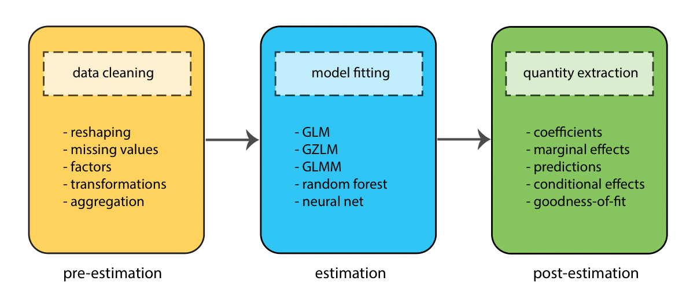

Stata Modeling
Topics
- Models with continuous outcomes
- OLS regression
- OLS model assumptions and diagnostics
- Including interaction terms
- Including categorical predictors
- Models with binary outcomes
- Logistic regression
- Obtaining odds ratios
- Exporting & saving results
- Regression tables
- Model comparison
- Obtaining quantities of interest
- Margins of responses
- APM: Average Predictive Margins
- PMM: Predictive Margins at the Means
- PMR: Predictive Margins at Representative values
- Margins of changes in responses
- AME: Average Marginal Effects
- MEM: Marginal Effects at the Means
- MER: Marginal Effects at Representative values
- Margins of responses
Setup
Class structure and organization
- Informal — Ask questions at any time. Really!
- Collaboration is encouraged - please spend a minute introducing yourself to your neighbors!
- If you are using a laptop, you will need to adjust file paths accordingly
- Make comments in your do-file - save on flash drive or email to yourself
Prerequisites
This is an intermediate-level Stata modeling workshop
- Assumes basic knowledge of Stata
- Not appropriate for people already well familiar with modeling in Stata
- If you are catching on before the rest of the class, experiment with command features described in help files
Goals
We will learn about the Stata modeling ecosystem by analyzing data from three datasets. In particular, our goals are to learn about:
- Modeling workflow
- Modeling continuous outcomes
- Modeling binary outcomes
- Producing regression tables
- Obtaining margins of responses
- Obtaining margins of changes in responses
Modeling workflow
Before we delve into the details of how to fit models in Stata, it’s worth taking a step back and thinking more broadly about the components of the modeling process. These can roughly be divided into 3 stages:
- Pre-estimation
- Estimation
- Post-estimaton
At each stage, the goal is to complete a different task (e.g., to clean data, fit a model, test a hypothesis), but the process is sequential — we move through the stages in order (though often many times in one project!)

Throughout this workshop we will go through these stages several times as we fit different types of model.
Before fitting a model
GOAL: To learn about the data by creating summaries and visualizations.
The dataset
We have a dataset (states.dta) on a variety of variables for all 50 states. Variables include population, density, energy use, voting tendencies, graduation rates, income, etc.
We’re going to ask the question: does the amount of money spent on education (expense), family income(income), and percentage of students taking SATs (percent) affect the mean SAT score (csat) in a state?
Set working directory
Files are located in the dataSets folder in StataMod. Start by telling Stata where to look for these:
Use dir to see what is in the directory:
Models with continuous outcomes
GOAL: To learn about the Stata modeling ecosystem by using the regress command to fit ordinary least squares (OLS) models. In particular:
- Stata syntax for model specification
- Model diagnostics for checking OLS assumptions
- Including interaction terms
- Including categorical predictors
Fit the model
To fit a model in Stata, we first have to convert our theoretical model into Stata syntax — a symbolic representation of the model:
Note that immediately after the modeling command comes the outcome variable, followed by numerous predictors.
For example, the following model predicts SAT scores based on the amount of money spent on education (expense), family income(income), and percentage of students taking SATs (percent) in a state. Here’s the theoretical model:
\[ SATscores_i = \beta_01 + \beta_1expenditures_i + \beta_2income_i +\beta_3SATpercent_i + \epsilon_i \]
And here’s how we use the regress command to fit this model in Stata:
OLS assumptions
OLS regression relies on several assumptions, including:
- The model includes all relevant variables (i.e., no omitted variable bias).
- The model is linear in the parameters (i.e., the coefficients and error term).
- The error term has an expected value of zero.
- All right-hand-side variables are uncorrelated with the error term.
- No right-hand-side variables are a perfect linear function of other RHS variables.
- Observations of the error term are uncorrelated with each other.
- The error term has constant variance (i.e., homoscedasticity).
- (Optional - only needed for inference). The error term is normally distributed.
We can investigate assumptions #7 and #8 by plotting model diagnostics. A simple histogram of the residuals can be informative:
We can also examine homoscedasticity:
Type -help regress postestimation — for more information about model diagnostics. If assumptions are not met, alter the specification and refit the model.
Interactions
What if we wanted to test an interaction between percent and high?
Option 1: generate product terms by hand:
// generate product of percent and high
gen percenthigh = percent*high
regress csat expense income percent high percenthighOption 2: let Stata do your dirty work:
Categorical predictors
For categorical variables, we first need to dummy code. Let’s use region as an example.
Option 1: create dummy codes before fitting regression model:
// create region dummy codes using tab
tab region, gen(region)
// regress csat on region
regress csat region1 region2 region3Option 2: let Stata do it for you:
Exercise 0
Regression with continuous outcomes
Open the datafile, gss.dta.
Fit an OLS regression model to predict general happiness (happy) based on respondent’s sex (sex), marital status (marital), highest year of school completed (educ), and respondent’s income for last year (rincome).
- Before running the regression, examine descriptive statistics of the variables and generate a few scatterplots.
- Run your regression model.
- Examine the plausibility of the assumptions of normality and homoscedasticity.
- Add on to the regression equation by generating an interaction term between
sexandeducand testing the interaction.
Click for Exercise 0 Solution
// 1. Before running the regression, examine descriptive statistics of the variables and generate a few scatterplots.
sum happy educ rincome
tab sex
tab marital
scatter happy rincome
// 2. Run your regression model.
regress happy i.sex educ i.marital rincome
// 3. Examine the plausibility of the assumptions of normality and homoscedasticity.
hist happy, normal
rvfplot,yline(0)
// 4. Add on to the regression equation by generating an interaction term between `sex` and `educ` and testing the interaction.
regress happy i.sex##c.educ i.marital rincomeModels with binary outcomes
GOAL: To learn how to use the logit command to model binary outcomes. In particular:
- Run the model to obtain estimates on the log odds scale
- Transform model coefficients into odds ratios
The Dataset
Using the states.dta data, we’re going to ask the question: does people per square mile (density), percent HS graduates taking SAT (percent), and per pupil expenditures for primary and secondary school (expense) affect the probability of having an SAT score greater than or equal to 1000 (sat_binary)?
Recode the outcome variable
Recode the composite SAT score (csat) into two categories: whether a region’s mean SAT score is greater than or equal to 1000, or less than 1000.
Run the logistic model
Let’s predict the probability of having mean SAT score greater than or equal to 1000 based on density, percent, and expense.
Here’s the theoretical model:
\[ logit(p(SAT1000_i = 1)) = \beta_{0}1 + \beta_1density_i + \beta_2SATpercent_i + \beta_3expenditures_i \]
where \(logit(\cdot)\) is the non-linear link function that relates a linear expression of the predictors to the expectation of the binary response:
\[ logit(p(SAT1000_i = 1)) = ln \left( \frac{p(SAT1000_i = 1)}{1-p(SAT1000_i = 1)} \right) = ln \left( \frac{p(SAT1000_i = 1)}{p(SAT1000_i = 0)} \right) \]
And here’s how we use the logit command to fit this model in Stata:
Exercise 1
Regression with binary outcomes
Use the data file, gss.dta. Examine how age of a respondent (age), highest year of school completed (degree), hours per day watching TV (tvhours), and total family income for last year (income) relate to whether someone uses internet (usenet).
- Load the dataset.
- Run summary statistics, delete subjects who did not provide an answer to the
usenetquestion.
Exporting & saving results
GOAL: To learn how to store and export Stata models. In particular:
- How to store results from models
- How to compare models
- How to export Stata model output to Excel
Storing results
Stata offers several user-friendly options for storing and viewing regression output from multiple models. First, download the necessary packages:
Then store the results of some regression models using the estimates command and store option:
// fit two regression models and store the results
regress csat expense income percent high
estimates store Model1
regress csat expense income percent high i.region
estimates store Model2The stored models can be recalled by name using the estimates command and replay option:
Comparing models
The stored models can be compared by name using the estimates command and table option. For a more formal comparison, the lrtest command can be used to perform a likelihhod ratio test:
Exporting to Excel
To avoid human error when transferring coefficients into tables, Excel can be used to format publication-ready tables:
Exercise 2
Exporting & saving results
- Fit the logistic model and save it as
Model1.
- Add another predictor (
hrs1) in the model and save the new model asModel2and compare betweenModel1andModel2.
- Save the output of the better fitted model to a word document.
Click for Exercise 2 Solution
// 1. Fit the logistic model and save it as `Model1`.
logit usenet age i.degree tvhours income
est store Model1
// 2. Add another predictor (`hrs1`) in the model and save the new model as `Model2` and compare between `Model1` and `Model2`.
logit usenet age i.degree tvhours income hrs1
est store Model2
lrtest Model1 Model2
// 3. Save the better fitted model output to a word document.
logit usenet age i.degree tvhours income hrs1
outreg2 using Mymodel.docObtaining quantities of interest
GOAL: To obtain easy to interpret output from regression models. In particular:
- Margins of responses (a.k.a. predictive margins)
- Margins of changes of responses (a.k.a. marginal effects)
- Graphs of margins
The default summary model output that Stata produces is useful and intuitive for relatively simple models, especially if the outcome is continuous. For more complex models, especially non-linear models or those with interactions, the default output only reports a small subset of information from the model and/or presents results on an unintuitive scale. For such models, it is often easier to interpret margins — specifically, margins of responses or margins of changes in responses. Margins are statistics calculated from predictions of a previously fit model at fixed values of some covariates and averaging over the remaining covariates. Margins answers the question, “What does my model have to say about such-and-such a group or such-and-such a person?”. It answers this question:
- Either conditionally –— based on fixed values of covariates (e.g., the mean) -—- or averaged over the observations in the data.
- In terms of the response given covariate levels (margins of responses), or any other response you can calculate as a function of your estimated parameters -—- linear responses, probabilities, hazards, survival times, odds ratios, risk differences. (a.k.a. predictive margins, or adjusted predictions, or estimated marginal means, or least-squares means).
- In terms of the change in the response for a change in covariate levels (margins of changes in responses). (a.k.a. marginal effects or partial effects).
- Providing standard errors, test statistics, and confidence intervals and those statistics can take the covariates as given or adjust for sampling.
To calculate such effects in Stata, we need a flexible way of obtaining quantities of interest from the model. This is generally done using a post-estimation tool. The main post-estimation tool Stata has in its arsenal is the margins command. This is a very flexible tool for producing a variety of quantities of interest from almost all model types that Stata supports. In particular, margins can calculate:
- Different types of margins of responses:
- APM: Average Predictive Margins (average of the responses among actual people in the data)
- PMM: Predictive Margins at the Means (expected response for a person with average characteristics)
- PMR: Predictive Margins at Representative values (expected response across a range of covariate values)
- Difference types of margins of changes in responses:
- AME: Average Marginal Effects (average of the changes in responses among actual people in the data)
- MEM: Marginal Effects at the Means (expected change in response for a person with average characteristics)
- MER: Marginal Effects at Representative values (expected change in response across a range of covariate values)
The margins command can only be used after you’ve run a regression and acts on the results of the most recent regression command. The marginsplot command can be used to graph any of these margins or comparisons of margins and acts on the results of the most recent margins command.
Margins of responses
GOAL: To learn how to produce margins of responses. In particular:
- APM: Average Predictive Margins
- PMM: Predictive Margins at the Means
- PMR: Predictive Margins at Representative values
- Graph margins of responses
The dataset
The case study examples use the nhanesII dataset (Second National Health and Nutrition Examination Survey),
which was conducted in the mid to late 1970s. More on the study can be found at https://wwwn.cdc.gov/nchs/nhanes/nhanes2/. Let’s load the data:
Fit a model
We will examine a continuous measure of systolic blood pressure (bpsystol) as a function of a respondent’s age (age), whether they have diabetes (diabetes), and what geographical region they come from (region), using OLS regression.
APM: Average Predictive Margins
If you just type margins by itself, Stata will calculate the predicted value of the model outcome (bpsystol) for each observation in the data, then report the mean value of those predictions.
If margins is followed by a categorical variable, for example, region, Stata first identifies all the levels of the categorical variable. Then, it calculates what the mean predicted value of the model outcome (bpsystol) would be if all observations had that value for region. All other variables are left unchanged.
PMM: Predictive Margins at the Means
By default, margins reports the average of the predictions for each person (i.e., observation) in the data. This is the average response among the actual people in the data. But we can also get margins to report the prediction at the average of the covariates by using the atmeans option. This represents the expected response of a person with average characteristics.
PMR: Predictive Margins at Representative values
For continuous variables, margins cannot look at all possible values, but we can specify which values we want to examine with the at option:
The previous step calculates the mean predicted value of the model outcome (bpsystol) with age set to 50, and then again with age set to 80. We can also add more values by listing the numbers we want in a numlist:
Graph margins of responses
The previous step calculates the mean predicted value of bpsystol with age set to 50, 55, 60, 65, 70, 75, and 80. We can now use marginsplot to graph the results.
Exercise 3
Margins of responses
Open the datafile gss.dta
- Fit an OLS regression model to predict general happiness (
happy) based on respondent’s sex (sex), marital status (marital), highest year of school completed (educ), and respondent’s income for last year (rincome). Obtain average predictive margins forhappy.
- Obtain predictive margins of
sexandmarital.
- Obtain predictive margins of
rincomefrom 10000 to 30000, with an interval of 5000.
- Create a
marginsplotand interpret the results.
Click for Exercise 3 Solution
// 1. Fit an OLS regression model to predict general happiness (`happy`) based on respondent's sex (`sex`), marital status (`marital`), highest year of school completed (`educ`), and respondent's income for last year (`rincome`). Obtain average predictive margins for `happy`.
regress happy i.sex educ i.marital rincome
margins
// 2. Obtain predictive margins of `sex` and `marital`.
margins, sex
margins, marital
// 3. Obtain predictive margins of `rincome` from 10000 to 30000, with an interval of 5000.
margins, at(rincome=(10000(5000)30000))
// 4. Create a `marginsplot` and interpret the results.
marginsplot Margins of changes in responses
GOAL: To learn how to produce margins of changes in responses. In particular:
- AME: Average Marginal Effects
- MEM: Marginal Effects at the Means
- MER: Marginal Effects at Representative values
- Graph margins of changes in responses
The dataset
We will be using the same dataset as the previous example: the Second National Health and Nutrition Examination Survey (NHANES II). Let’s load the data:
Fit a model
We will predict the probability of someone having diabetes (diabetes), as a function of race (black), sex (female), and age (age), using logistic regression.
AME: Average Marginal Effects
We can first obtain the Average Predictive Margins of race (black) and sex (female). Then, we can use the dydx command to estimate changes in the response when the levels of race and sex change. Since, by default, these changes are averaged over each person in the dataset, we obtain Average Marginal Effects. As the current model is logistic, margins automatically back-transforms the APMs and AMEs from the estimation scale (i.e., the log odds scale) to the response scale (i.e., the probability scale).
MEM: Marginal Effects at the Mean
By default, margins with the dydx command reports the average of the changes in the probability of the response among actual people in the data. But we can also get margins to report the expected change in the probability of the response for a person with average characteristics by using the atmeans option.
MER: Marginal Effects at Representative values
For continuous variables, margins needs us to specify which values we want to examine using the at option. We can calculate the change in the probability of the model outcome (diabetes) when levels of race (black) and sex (female) change, across a range of values for age by supplying a list of numbers to a numlist:
// obtain Predictive Margins at Representative values
// choose range of values for one or more variables
// note: the `vsquish` option omits vertical white space between results
margins black, at(age=(20 30 40 50 60 70)) vsquish
// calculate marginal effects across that range
margins, dydx(black female) at(age=(20 30 40 50 60 70)) vsquish Graph margins of changes in responses
The previous step calculates the average change in the predicted probability of diabetes, when levels of race (black) and sex (female) change, with age set to 20, 30, 40, 50, 60, and 70. We can now use marginsplot to graph the results.
Exercise 4
Margins of changes in responses
Open the datafile gss.dta
- Fit a logistic model to examine how whether someone uses internet (
usenet) is related to age of the respondent (age), highest year of school completed (degree), hours per day watching TV (tvhours), and total family income for last year (income). Obtain Average Predictive Margins and Average Marginal Effects fordegree.
- Obtain Predictive Margins of
degreeat Representative values oftvhoursfrom 0 to 10 hours, on a 1 hour interval. Examine how the marginal effect ofdegreediffers across the range oftvhours(i.e., obtain Marginal Effects at Representative values).
- Create a
marginsplotfor the marginal effects from #2.
Click for Exercise 4 Solution
// 1. Fit a logistic model to examine how whether someone uses internet (`usenet`) is related to age of the respondent (`age`), highest year of school completed (`degree`), hours per day watching TV (`tvhours`), and total family income for last year (`income`). Obtain Average Predictive Margins and Average Marginal Effects for `degree`.
logit usenet age i.degree tvhours income
margins degree
margins, dydx(degree)
// 2. Obtain Predictive Margins of `degree` at Representative values of `tvhours` from 0 to 10 hours, on a 1 hour interval. Examine how the marginal effect of `degree` differs across the range of `tvhours` (i.e., obtain Marginal Effects at Representative values).
margins degree, at(tvhours=(0 1 2 3 4 5 6 7 8 9 10) vsquish
margins, dydx(degree) at(tvhours=(0 1 2 3 4 5 6 7 8 9 10)) vsquish
// 3. Create a `marginsplot` for the marginal effects from #2.
marginsplotWrap-up
Feedback
These workshops are a work in progress, please provide any feedback to: help@iq.harvard.edu
Resources
- IQSS
- Workshops: https://dss.iq.harvard.edu/workshop-materials
- Data Science Services: https://dss.iq.harvard.edu/
- Research Computing Environment: https://iqss.github.io/dss-rce/
- HBS
- Research Computing Services workshops: https://training.rcs.hbs.org/workshops
- Other HBS RCS resources: https://training.rcs.hbs.org/workshop-materials
- RCS consulting email: mailto:research@hbs.edu
- Stata
- UCLA website: http://www.ats.ucla.edu/stat/Stata/
- Stata website: http://www.stata.com/help.cgi?contents
- Email list: http://www.stata.com/statalist/